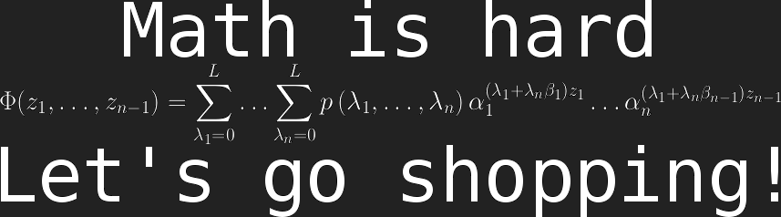

## Overview

I am a data scientist with interests in dimension reduction, computational
linear algebra, and high performance computing. I am passionate about
open source software and programming. I spend a lot of time thinking about
text mining, machine learning, distributed systems, and profiling.
My formal background is mathematics and statistics, but if you squint, I can
pass for a computer scientist. I spent several years teaching, a year as a
statistics consultant, and 3 years in high performance computing. Today
I'm a graduate student working towards my PhD.
Much of my work consists of combining mathematics, computer science, and
statistics to create scalable data science utilities with elegant interfaces.
I know a great deal about both the inner and outer cobwebs of the R language,
and spend a lot of my time (personal and professional) linking it to high
performance C and Fortran code. I am founding member and co-lead developer of
the
<a href="http://r-pbd.org">pbdR project</a>. We do stuff with
R on supercomputers, like fitting a linear model with 50,000 cores
(it's pretty neat).